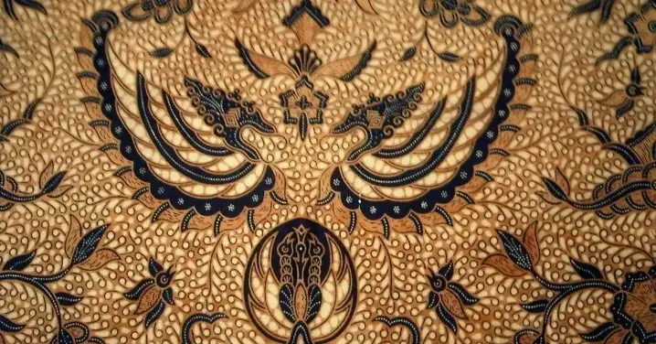
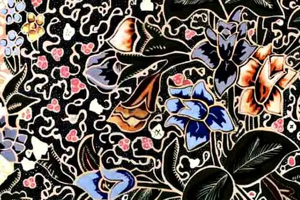

Pengelompokkan Jenis Batik

Batik Pekalongan
Memiliki warna-warna cerah dan motif bunga yang menggambarkan keceriaan masyarakat pesisir.
Lihat Detail

Batik Parang Yogyakarta
Motif diagonal menyerupai ombak laut yang melambangkan semangat dan keberanian.
Lihat Detail
Batik Sidomukti
Motif tradisional dengan makna kesejahteraan dan harapan akan kehidupan yang baik.
Lihat Detail